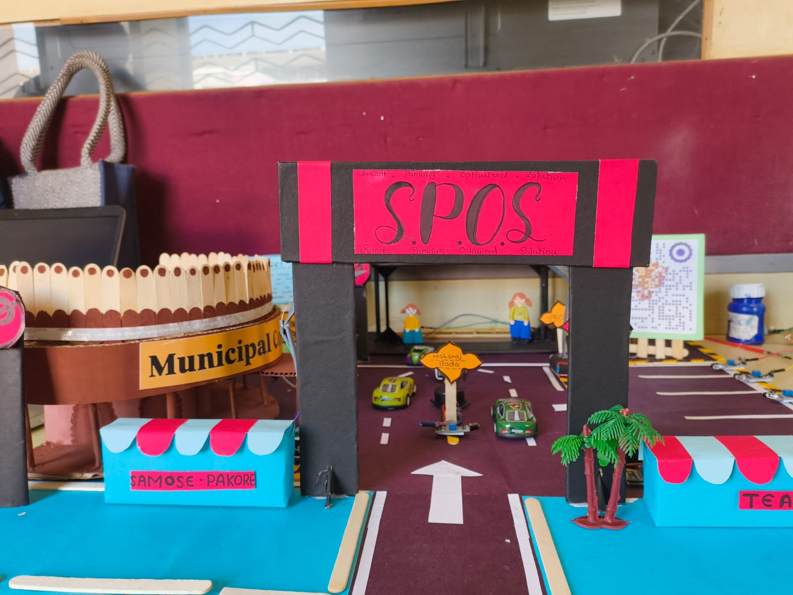
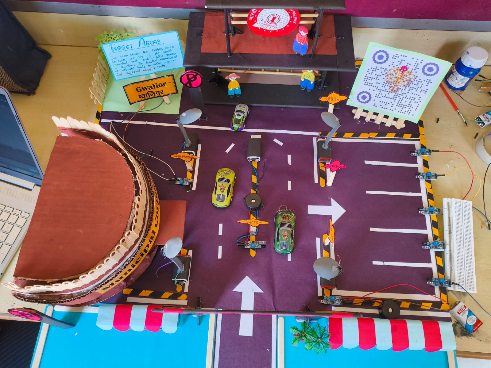
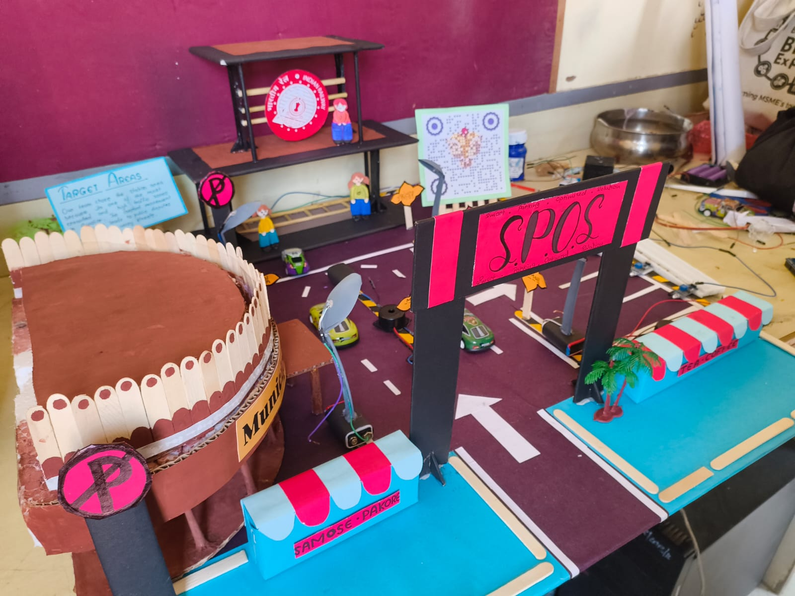
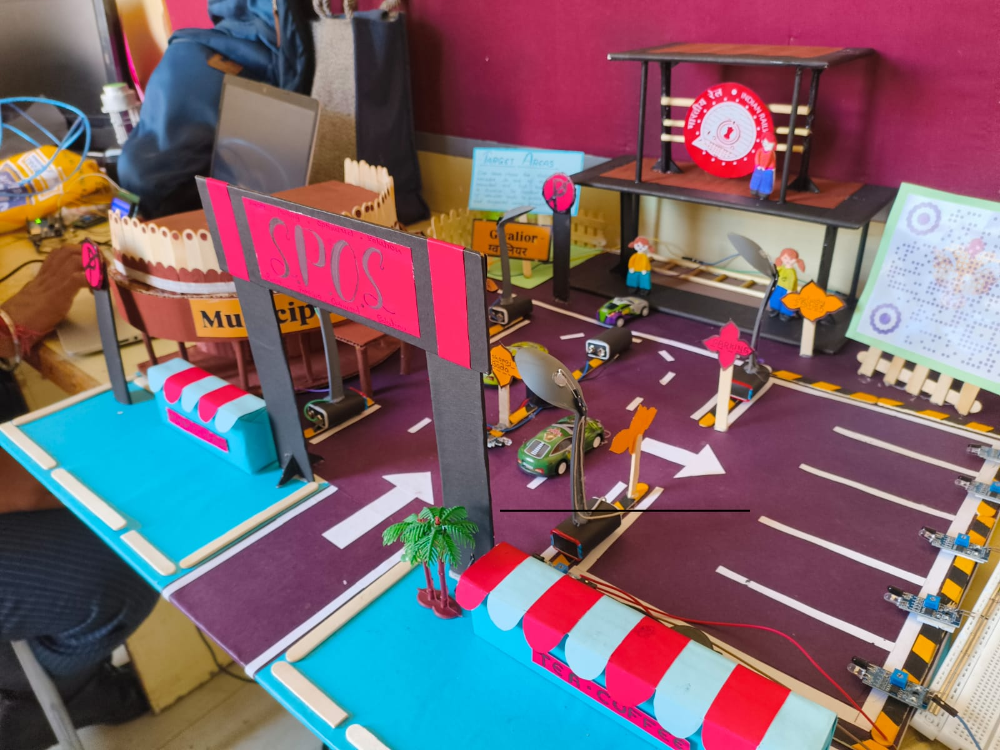
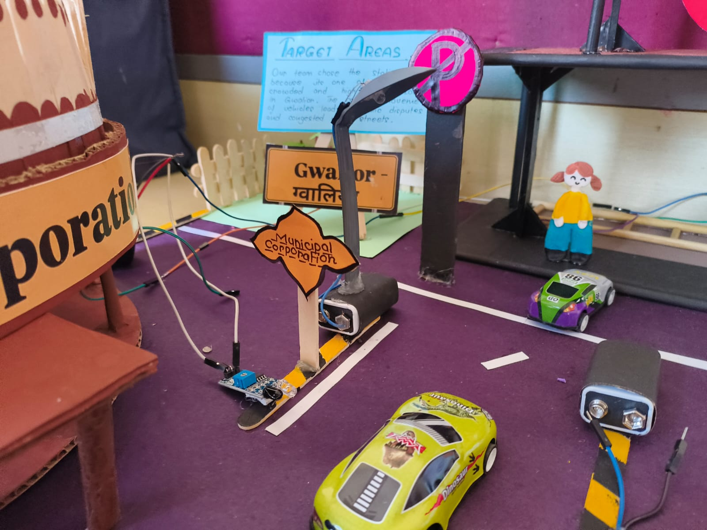
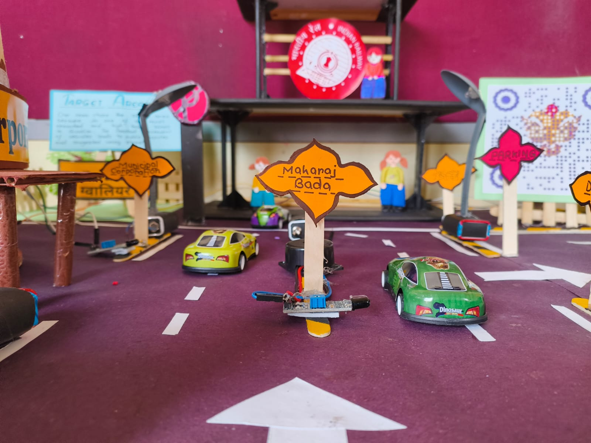
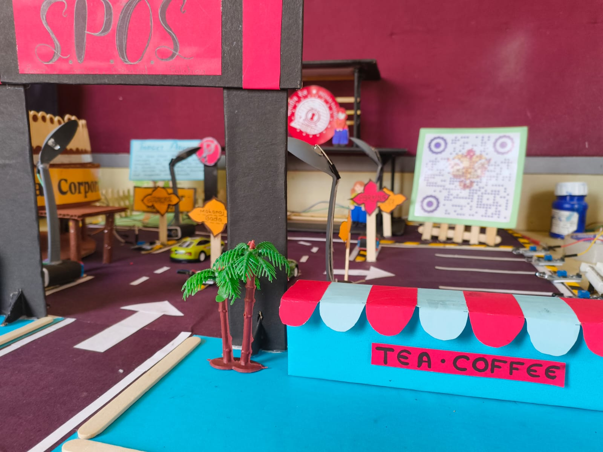

कार्यरत: S.P.O.S. का अनावरण








नो-पार्किंग जोन में अवैध पार्किंग सिर्फ नियम उल्लंघन नहीं है — यह स्मूथ ट्रैफिक, इमरजेंसी मूवमेंट और पैदल यात्रियों की सुरक्षा में रोज़ाना रुकावट है।
स्रोत: फील्ड ऑब्जर्वेशन्स और लोकल ट्रैफिक पुलिस रिपोर्ट्स, ग्वालियर (Q4 2024)।
S.P.O.S. (स्मार्ट पार्किंग ऑप्टिमाइज्ड सॉल्यूशन) एक AI-पावर्ड सिस्टम है जो शहरी पार्किंग को स्मार्ट और कुशल तरीके से मैनेज करता है। यह रियल-टाइम सेंसर्स की मदद से प्रतिबंधित क्षेत्रों में अवैध पार्किंग को डिटेक्ट करता है और डिजिटल इंटरफेस के ज़रिए वाहनों को नज़दीकी कानूनी पार्किंग स्पेस पर रीडायरेक्ट करता है। यह ड्राइवर्स को तुरंत दंड देने की बजाय उन्हें सूचित करता है, समय देता है और सही कार्रवाई करने में मदद करता है — एक सहायक और समझदार समाधान।
जैसे ही कोई वाहन नो-पार्किंग जोन में प्रवेश करता है, एक IR सेंसर उसकी मौजूदगी पकड़ लेता है। एक बज़र और स्पीकर ड्राइवर को तुरंत अलर्ट करते हैं, और पास में एक QR कोड दिखाया जाता है। जब इसे स्कैन किया जाता है, तो यह एक विशेष वेबसाइट पर ले जाता है जो 30-मिनट की काउंटडाउन शुरू करता है, एक चेतावनी संदेश दिखाता है, और Google Maps लिंक के साथ नज़दीकी उपलब्ध पार्किंग स्पॉट्स ढूंढने में मदद करता है। यदि वाहन को समय पर नहीं हटाया जाता, तो सिस्टम म्युनिसिपल अथॉरिटीज़ के लिए वायलेशन लॉग करता है।
S.P.O.S. सिर्फ अवैध पार्किंग रोकने के लिए नहीं है — यह जागरूकता बढ़ाता है, समय बचाता है, ट्रैफिक लोड कम करता है, और बेहतर शहरी नियोजन को सपोर्ट करता है। टेक्नोलॉजी और रियल-वर्ल्ड ट्रैफिक ज़रूरतों को जोड़कर, यह हमें अनुशासित, इको-फ्रेंडली और कुशल शहरों के करीब लाता है।
जुर्माना या टो ट्रक का इंतज़ार करने की बजाय, यह सिस्टम ड्राइवर को रियल-टाइम में सूचित करता है, शिक्षित करता है, और एक बेहतर विकल्प दिखाता है: कानूनी पार्किंग स्पॉट्स। यह स्मार्ट, प्रैक्टिकल और समय की बचत करने वाला है।
इन्फ्रारेड (IR) सेंसर नो-पार्किंग ज़ोन में प्रवेश करने वाले किसी भी वाहन को पहचान लेते हैं। सिस्टम उल्लंघन को ठीक उसी पल डिटेक्ट करता है — तेज़ी से और सटीक तरीके से।
एक बज़र ध्वनि करता है और स्पीकर एक वॉइस मैसेज चलाता है, जो ड्राइवर को उल्लंघन के बारे में सूचित करता है और QR कोड स्कैन करने का निर्देश देता है।
स्पीकर के पास लगा QR कोड ड्राइवर द्वारा स्कैन किया जाता है, जो उन्हें हमारी वेबसाइट पर रीडायरेक्ट करता है। वेबसाइट पर लाइव काउंटडाउन और निर्देश दिखाई देते हैं।
एक 30-मिनट का टाइमर शुरू होता है। वेबसाइट नज़दीकी उपलब्ध पार्किंग स्पेस को मैप लिंक के साथ दिखाती है, जिससे ड्राइवर तेज़ी से वाहन हटा सकता है।
अगर वाहन 30 मिनट के भीतर नहीं हटाया जाता, तो सिस्टम उल्लंघन को लॉग करके स्थानीय अधिकारियों को अलर्ट कर देता है। एडवांस्ड वर्ज़न में एक ऑटोमेटेड बैरियर भी सक्रिय हो सकता है।
S.P.O.S. को वास्तविक जीवन की समस्याओं का समाधान करने के लिए डिज़ाइन किया गया है। यहाँ बताया गया है कि यह विभिन्न वातावरणों में पार्किंग के अनुभव को कैसे बदलता है:
अपने कार्यस्थल के पास आसानी से पार्किंग ढूंढें।
परिवारों और दुकानदारों के लिए वीकेंड शॉपिंग बिना तनाव के — अब घंटों चक्कर लगाने की ज़रूरत नहीं।
आयोजक डिजिटल तरीके से पार्किंग मैनेज करते हैं, जिससे इवेंट्स पर भ्रम और ट्रैफिक जमाव कम होता है।
अपनी पार्किंग पहले से प्लान करें, ताकि यात्रियों को पार्किंग की देरी से फ्लाइट या ट्रेन न छूटे।
संस्थान स्टाफ और अभिभावकों के लिए विशेष स्लॉट निर्धारित करते हैं — सुचारु पिकअप, बेहतर सुरक्षा।
आपातकालीन वाहनों और मरीजों को हमेशा पार्किंग उपलब्ध हो — जानलेवा देरी से बचाव।
मौसमी भीड़ को डिजिटल तरीके से मैनेज करता है, जिससे आगंतुकों का अनुभव और यातायात प्रवाह बेहतर होता है।
नागरिक अपनी यात्रा से पहले पार्किंग उपलब्धता चेक करके अनावश्यक प्रतीक्षा से बचते हैं — अधिक कुशल कतारें।
अरुडिनो बोर्ड: इस तकनीक का 'दिमाग'।
एलसीडी डिस्प्ले: उपयोगकर्ता सुविधा के लिए।
बज़र: तत्पर और सक्रिय।
आईआर सेंसर: उद्देश्य के लिए तैयार।
C++ भाषा: अरुडिनो में उपयोग की जाने वाली कोडिंग भाषा।
नगर निगम में हमारे विचार की प्रस्तुति।
अवधारणा की व्याख्या करते हुए।
स्मार्ट सिटी कार्यालय में हमारे प्रस्ताव की प्रस्तुति।
आज की तेज़-रफ़्तार दुनिया में, पार्किंग सिर्फ़ एक छोटी सी परेशानी नहीं — यह एक बढ़ती हुई शहरी चुनौती है जो रोज़ाना लाखों लोगों को प्रभावित करती है। स्मार्ट पार्किंग ऑपरेटिंग सिस्टम (S.P.O.S.) इस समस्या का सीधा समाधान प्रदान करता है — एक नवाचारी, प्रौद्योगिकी-आधारित समाधान जो वास्तविक लोगों और वास्तविक शहरों के लिए बनाया गया है। लाइव स्लॉट उपलब्धता, आसान रिज़र्वेशन, डिजिटल भुगतान और यूज़र-फ्रेंडली नेविगेशन के ज़रिए, SPOS सिर्फ़ पार्किंग की समस्याएँ हल नहीं करता — यह पूरे अनुभव को नए सिरे से परिभाषित करता है।
इस सिस्टम के माध्यम से, हमारा लक्ष्य ट्रैफ़िक जाम को कम करना, पार्किंग की तलाश में घूमते वाहनों से होने वाले कार्बन उत्सर्जन में कटौती करना और शहरी यात्रा को अधिक व्यवस्थित एवं कुशल बनाना है। चाहे वह एक दैनिक यात्री को कार्यस्थल के पास पार्किंग ढूँढने में मदद करना हो या एक परिवार को वीकेंड पर शॉपिंग करते समय शांति प्रदान करना, S.P.O.S. उपयोगकर्ताओं को सुविधा, स्पष्टता और नियंत्रण प्रदान करता है।
लेकिन हमारी दृष्टि यहीं समाप्त नहीं होती। S.P.O.S. को भविष्य में AI इंटीग्रेशन, स्मार्ट सिटी कनेक्टिविटी और यहाँ तक कि वॉइस-एनेबल्ड पार्किंग सपोर्ट जैसी संभावनाओं के साथ विकसित होने के लिए बनाया गया है।
S.P.O.S. सिर्फ़ एक प्रोजेक्ट नहीं — यह स्मार्टर, सस्टेनेबल शहरी जीवन की दिशा में एक कदम है। S.P.O.S. के साथ, हम सिर्फ़ पार्किंग को आसान नहीं बना रहे — हम बदलाव की दिशा में आगे बढ़ रहे हैं।
हम ग्वालियर ग्लोरी हाई स्कूल के प्रबंधन का हृदय से आभार व्यक्त करते हैं, जिन्होंने हमें अपने कौशल और नवाचार को प्रदर्शित करने का यह अद्भुत अवसर प्रदान किया।
हमारी आदरणीया प्रधानाचार्या, डॉ. राजेश्वरी सावंत जी को विशेष धन्यवाद, जिनके निरंतर प्रोत्साहन और समर्थन ने इस प्रोजेक्ट को सफल बनाने में महत्वपूर्ण भूमिका निभाई।
हम कंप्यूटर विज्ञान विभागाध्यक्ष, श्रीमती नेहा सोनोने जी के प्रति गहरा आभार व्यक्त करते हैं, जिनके मार्गदर्शन, विचार और संरक्षण ने S.P.O.S. को वास्तविकता में बदलने में महत्वपूर्ण योगदान दिया।